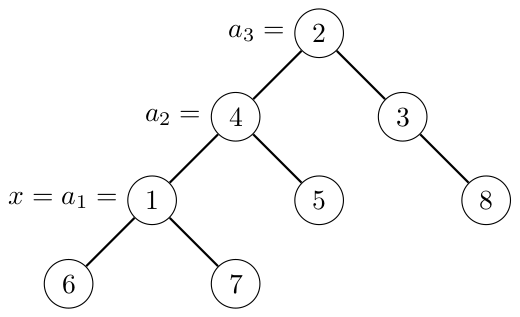

K Tree Quiz
The integers in \(L\) can be represented as tuples \((x, \mathrm{LCA}(x, y), y)\), where the tuples are ordered by \(x\), ties are broken by \(\mathrm{LCA}(x, y)\), and further ties are broken by \(y\). Since each \(i\) has \(n\) tuples with \(i\) as its first element, the value of \(x\) for the \(k\)-th element of \(L\) is simply \(\lceil \frac{k}{n} \rceil\). Next, we want to find the \(((k-1) \bmod n + 1)\)-th tuple with \(x\) as its first element. For simplicity, let \(m = (k-1) \bmod n + 1\).
Let \(S(i)\) be the set of nodes in the subtree of node \(i\), and \(A = \{a_1, a_2, \ldots\}\) be the ancestors of node \(x\) in order from \(x\) (i.e., \(a_1 = x\) and node \(a_{i+1}\) is the parent of node \(a_i\)). Let \(f(a_i) = |S(a_i) \setminus S(a_{i-1})|\) (i.e., the number of nodes in the subtree of node \(a_i\) but not in the subtree of node \(a_{i-1}\)), and \(f(z) = 0\) for \(z \notin A\). This means \(f(z)\) is the number of tuples with \(x\) and \(z\) as the first and second elements respectively.

- \(f(a_1) = f(1) = 3\) (nodes \(1\), \(6\), and \(7\))
- \(f(a_2) = f(4) = 2\) (nodes \(4\) and \(5\))
- \(f(a_3) = f(2) = 3\) (nodes \(2\), \(3\), and \(8\))
- \(f(3) = f(5) = f(6) = f(7) = 0\)
The \(m\)-th tuple that we are looking for has \(l\) as \(\mathrm{LCA}(x, y)\) where \(\sum_{i=1}^{l} f(i) \ge m\) and \(\sum_{i=1}^{l-1} f(i) \lt m\). We can find this value using a segment tree that stores the values of \(f(i)\). For each edge \((u, v)\), by changing the value of \(x\) from \(u\) to \(v\), only the values of \(f(u)\) and \(f(v)\) change. Therefore, we can keep the segment tree for each \(x\) using persistent segment tree in \(O(n \log n)\) preprocessing time.
Let \(m' = m - \sum_{i=1}^{l-1} f(i)\). We want to find the \(m'\)-th tuple with \(x\) and \(l\) as its first and second elements respectively. Let \(p\) is the index of \(A\) such that \(a_p = l\). Thus, we want to find the \(m'\)-th node (in increasing order) in \(S(a_p) \setminus S(a_{p-1})\).
We can do this by using another segment tree. Let \(G_i\) be a segment tree that stores \(G_i(j) = 1\) if node \(i\) is an ancestor of node \(j\), or \(G_i(j) = 0\) otherwise. To compute \(G_i\), we can take \(G_h\) as the base, where node \(h\) is the child of node \(i\) with maximum \(|S(h)|\), and change the values of \(G_i(j)\) for all nodes \(j \in (S(i) \setminus S(j))\) individually. With another persistent segment tree, we can keep all segment trees \(G\) in \(O(n \log^2 n)\) preprocessing time.
With \(G_{a_p}\) and \(G_{a_{p-1}}\) which represents the subtree of node \(a_p\) and node \(a_{p-1}\) respectively, we can find the answer \(y\) that we are looking for. It is the unique integer that satisfies the following two inequalities:
\[\begin{aligned} \left( \sum_{i=1}^{y} G_{a_p}(i) \right) - \left( \sum_{i=1}^{y} G_{a_{p-1}}(i) \right) &\ge m' \\ \left( \sum_{i=1}^{y-1} G_{a_p}(i) \right) - \left( \sum_{i=1}^{y-1} G_{a_{p-1}}(i) \right) &\lt m' \end{aligned}\]This solution runs in \(O(n \log^2(n) + q \log^2(n))\) time for preprocessing the persistent segment trees and answering all questions.